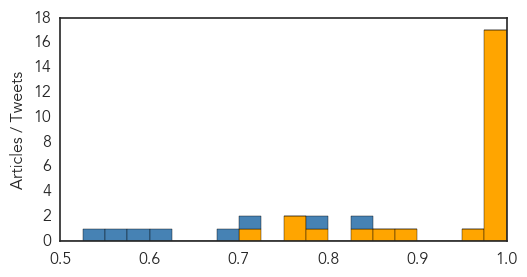
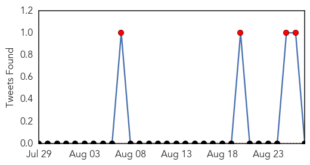
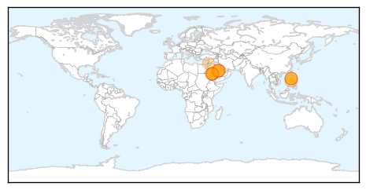
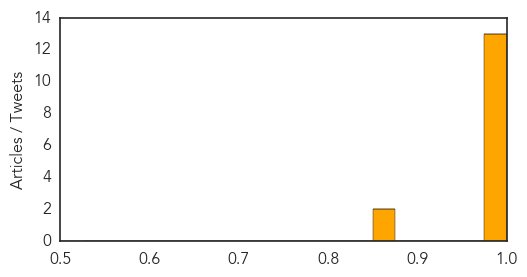

Ebola
30-Day Web Trend
1 alerts, 0 warnings

30-Day Twitter Trend
0 alerts, 0 warnings

Article Locations

Article Confidences
Top Articles:
- 1.000
- 'We Were Lucky This Time': How Experts are Battling the Next Ebola
- 1.000
- Ebola in graphics: The toll of a tragedy
- 1.000
- Watch Sierra Leone's Last Known Ebola Patient Celebrate Being Well!
- 0.999
- Scientists develop therapies to protect humans from Ebola virus
- 0.999
- On the trail of an Ebola cure
- 0.999
- LIBERIA: Plan Int’l, Medical Corps Int’l Launch Partnership To Respond To Ebola Fight
- 0.999
- As Sierra Leone waits for Ebola all-clear, its emotional scars
- 0.998
- As Sierra Leone Waits for Ebola All-Clear, Its Emotional Scars Will Take Longer to Heal
- 0.998
- Ebola Mission Donates Equipment
- 0.996
- WHO to study use of sanctions as part of global epidemic response
- 0.995
- After Ebola: NEIDL Infectious Diseases Expert Returns to Africa National Emerging Infectious Diseases Laboratories
- 0.994
- African Immigrants in USA Suffer Ebola-Induced Xenophobia
- 0.990
- IMC pays tribute to Qatar Charity for supporting Ebola treat..
- 0.987
- Guinea Extends Ebola Ring Vaccine Trial to Sierra Leone
- 0.986
- After Ebola: NEIDL Infectious Diseases Expert Returns to Africa
- 0.978
- Are We Prepared For The Next Global Epidemic? The Public Doesn't Think So
- 0.978
- Emory Eye Center team makes second trip to West Africa in "Quiet Eye" project
- 0.972
- UNICEF story: No room for complacency as Sierra Leone approaches zero
- 0.883
- WHO supports Epidemiology training
- 0.857
- Hail to the chiefs
- 0.831
- World Humanitarian Day: Protracted Mega-crises Require New Solutions to Save Lives
- 0.796
- The Ebola Crisis Is Over, but Tiffany Is Still Paying for It
- 0.774
- Koroma commissions 100 buses
- 0.752
- Ebola's latest outbreak: A family are finally reunited after quarantine
- 0.721
- China Creates Multiple “Firsts” in Combating ebola – Wang Yi « Awoko Newspaper
Top Tweets:
- 0.963
- Scientists develop therapies to protect humans from Ebola virus - The Guardian Nigeria (satire) (p... http://t.co/txiEjntKl1 ebola EVD
- 0.927
- WHO Ebola report 28041 cases 11302 deaths 881 health care workers infected 512 health care workers dead http://t.co/0uBz5evdHk
- 0.924
- Ebola may persist in wastewater for at least 8 days - Medical News Today http://t.co/y12LDA33BJ ebola EVD
- 0.905
- Ebola in graphics - The Economist (blog) http://t.co/EVqYa62bRR ebola EVD
- 0.904
- SierraLeone. Ebola's latest outbreak: A family are finally reunited after quarantine http://t.co/JyxPsAq0V0
- 0.882
- Conflict abroad or virus outbreak at home? A Liberian aid worker’s dilemma Ebola http://t.co/Z6DyZfWGjD
- 0.872
- Vaccines Weren't Ready for Ebola. We Can Do Better - Wired http://t.co/aOJHusgoBP ebola EVD
- 0.867
- RT: The countries most affected by the Ebola virus now see a slowdown in the number of infections http://t.co/VNPHsB0VzE http…
- 0.823
- Ngafuan Urges Affected Nations to Help Develop Ebola Vaccine - http://t.co/NaiI6Jl8yj http://t.co/EYnffpOWle ebola EVD
- 0.766
- The Ebola epidemic highlighted the weaknesses of West African health systems. @ID4D looks at road towards recovery http://t.co/R7N6yC4h2z
- 0.759
- Emergency Physicians in the Ebola Epidemic @AnnalsofEM http://t.co/JxCqXqRwY1
- 0.595
- 27 Aug - news pouch on avianflu avianinfluenza Ebola EbolaResponse MERS is here: http://t.co/HJbJAogP1c
- 0.593
- RT: Humanitarian lessons from West Africa - The Ebola response strategy http://t.co/n…
- 0.574
- Scientists develop therapies to protect humans from Ebola virus - The Guardian Nigeria (satire) (press release) (b... http://t.co/Cd0uZG8ot6
- 0.564
- WHO official on after Ebola: 'Likely our best chance ever to transform the world’s response to epidemics' http://t.co/HTMaHqPAaj
- 0.510
- Ebola response panel studying ways to enforce compliance with key UN legal health instrument: http://t.co/VUqLjrIJVl
MERS
30-Day Web Trend
0 alerts, 0 warnings

30-Day Twitter Trend
4 alerts, 0 warnings

Article Locations
Article Confidences
Top Articles:
- 0.999
- Jordan reports travel-linked MERS case, Riyadh outbreak total grows
- 0.997
- Saudi Arabia sees Mers deaths surge
- 0.996
- MERS virus kills 19 in week in Saudi: ministry
- 0.996
- Filipino nurse in Saudi tests negative for MERS
- 0.996
- MERS virus kills 19 in week in Saudi: ministry
- 0.996
- MERS virus kills 19 in a week
- 0.992
- Another Pinoy in Saudi Arabia under observation for Mers-CoV
- 0.992
- Filipinos told anew to be wary of contracting MERS virus
- 0.989
- Another Filipina nurse in Saudi Arabia suspected of having MERS (updated)
- 0.988
- DFA: Another OFW in Saudi suspected of having MERS-CoV
- 0.979
- MERS worry as Haj dates approaching
- 0.978
- Saudi Arabia: Concerns Over MERS As Haj Dates Near
- 0.977
- Saudi- MERS worry as Haj dates approaching
- 0.875
- Jordan records second Corona Virus case in 2 days
- 0.856
- Jordan records second Corona Virus case in 2 days
Top Tweets:
- 0.681
- AFD blog `@WHO Saudi MERS Update – August 27th' MERS-CoV http://t.co/GDR318I6S8
- 0.671
- AFD blog `Saudi MOH Reports 6 More MERS Cases In Riyadh' MERS-CoV http://t.co/fVf15uos1U
- 0.610
- AFD Blog `Media Reports: Jordanian MERS Patient Died' MERS-CoV http://t.co/1khEXz0VSF